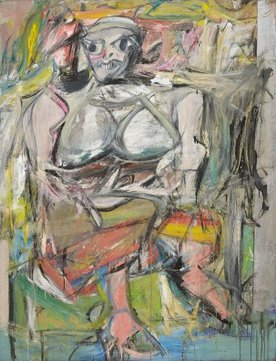

Woman I
Willem de Kooning · 1950–52 · Oil, enamel and charcoal on canvas · Museum of Modern Art, New York
In copyright. Look and learn: shown for study, not for download.
Willem de Kooning spent two years on this canvas, from 1950 to 1952, making many preliminary studies and starting over several times. It is painted in oil, enamel and charcoal, and it is the first of six canvases of women in the same manner. De Kooning was born in Rotterdam and had come to the United States in 1926; he was in his late forties when he finished it.